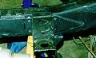
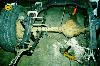

by: Terry L. Howe
|
| New body mounts |
Frame work wasn't done after simply chopping up and splicing together the '73 Commando frame to flat fender specifications. There was still a large frame crack to fix near the front spring mount, the splices to reinforce, body mounts to build, and some frame boxing to do.
Frame Cracks
Someone must of caught so big air with that Commando because it had a large frame crack just behind the front fixed spring hanger. This is a fairly common places for these frames to crack. I welded up the crack, but to stop future cracks, I wanted to reinforce the area.
I was also concerned about have a straight verticle weld on the frame since it was likely to cause stress cracks around the weld. I had a similar situation where I had spliced the frame together. The common solution is to weld a fish mouthed gusset over the weld so that the stresses are distributed over a wider area.
|  |
| Inverse fish mouth |
Near the back, the frame curved up where I was going to be putting this fish mouth, so I decided to try an inverse fish mouth. I cut a piece of 3"x3/16" steel so the ends were pointed and ran the piece all the way on the outside of the frame rail from one spring to the other. I stitch welded it every 6" or so. The 3/16" is probably overkill, a 1/8" piece should be more than enough, but the material was handy.
Body Mounts
When I was cutting up the frame, I cut off all the body mounts because the layout wouldn't work for my needs. Since I needed to build a new floor for my tub, I put the body mounts in places that were convenient for me and would add the most strength. I used the mounts that I cut off and just welded them on top of the 3/16" steel I had welded on for frame reinforcement.
One of the rear mounts I was able to keep in place and the far back mount needed to be fabricated. I used some 2"x2" square tubing to make the back body mount. I moved the mounts from there stock location inside the frame rails. The stock location of the rear body mounts for flat fenders have a tendancy to rip off and in fact mine were ripped completely off when I bought the Jeep.
I used the same 2"x2" square tubing to build new body mounts for the grill. I reinforced the grill with some 2"x2" angle welded a nut inside the tubing so the bolts run down. The grill is sturdy enough now that it could stand up on its own for street use at least.
Frame Boxing
|  |
| Frame boxing |
I was pretty tired of doing frame work when my friend Roger Wild stopped by to see how I was doing. He drives an early 70s CJ-5, so his framee was very similar. He said I should box the unboxed rear section of the frame or I will most likely get cracks. I was disappointed to hear this, but took his advice.
I used some 1/8"x&8" steel and cut ot to the contors of the frame. I used the angle grinder to perfect the shape and get the paint off the frame. After that, I simply weled the curved plate to the outside edge of the C channel. This should add plenty of strenght to the frame in this area.
|
| Related Information: |
{kind=link}